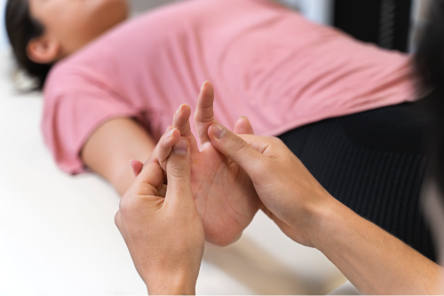
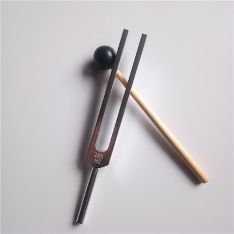

Les outils utilisés en kinésiologie :
-
Santé par le toucher :
C’est le fondement même de la kinésiologie. Le concept repose sur le fait que chaque méridien d’acupuncture est lié à un organe et à un muscle. Le test des muscles en question permet d’établir le profil énergétique de la personne, puis de permettre sa rééquilibration. Ce principe est basé sur le triangle de la santé . L’humain est constitué de trois dimensions : structurelle, biochimique et psycho-émotionnelle. Lorsqu’un des systèmes est déséquilibré, il peut par conséquent déséquilibrer les autres systèmes. Et inversement, en rééquilibrant un système, on peut rééquilibrer les autres.
-
L’édu-kinésiologie :
L’édu-kinésiologie permet d’intervenir sur des difficultés telles que l’apprentissage, le manque de concentration, les problèmes de communication. Les protocoles utilisés dans cette technique sont basés sur la notion que l’apprentissage ne peut être séparé de la notion de mouvement. Ces mouvements facilitent le développement de la coordination en facilitant notamment la communication entre les deux hémisphères du cerveau.
-
Intégration Corps / Mental :
Notre corps conserve toute notre histoire dans ses cellules, y compris les expériences négatives qui génèrent un stress susceptible d’être réactivé dans certaines situations, entrainant des sentiments d’inhibition et de perte de contrôle. Comprendre l’origine d’un stress et en dissocier la charge émotionnelle permet à chacun de retrouver son pouvoir personnel, et de semer les graines d’un nouveau possible.
-
La kinésiologie énergétique et l’aura kinésiologie :
La kinésiologie énergétique et l’aura kinésiologie sont des approches thérapeutiques puissantes qui se concentrent sur le déblocage et le rééquilibrage des centres énergétiques du corps, notamment les chakras et les différentes couches de l’aura. Ces pratiques visent à restaurer l’harmonie et l’équilibre dans le système énergétique d’une personne.
-
Les réflexes archaïques :
Un aspect essentiel de cette approche est la prise en compte des réflexes archaïques, une expertise que seul un praticien certifié peut apporter. Les réflexes archaïques sont des réponses automatiques du système nerveux qui peuvent être hyperactives ou non activées chez certaines personnes. Ces déséquilibres émotionnels, physiques ou les difficultés d’apprentissage peuvent souvent être attribués à des réflexes archaïques mal intégrés. Grâce à la kinésiologie, ces réflexes peuvent être intégrés dans le schéma moteur volontaire de la personne, conduisant à une disparition relativement rapide des difficultés associées.
 -
Les diapasons thérapeutiques :
En complément de ces pratiques, les diapasons thérapeutiques sont un outil précieux. Ils peuvent être utilisés en plaçant des diapasons sur certains points d’acupuncture ou en les intégrant dans le champ énergétique de la personne. Les vibrations bénéfiques émises par les diapasons contribuent à restaurer l’harmonie énergétique et le "mieux-être".
